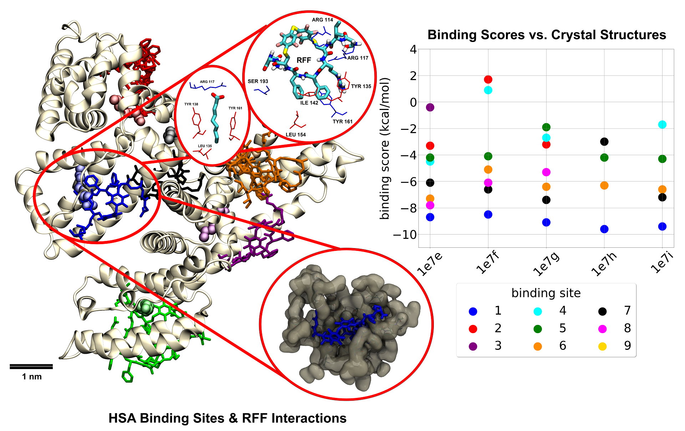
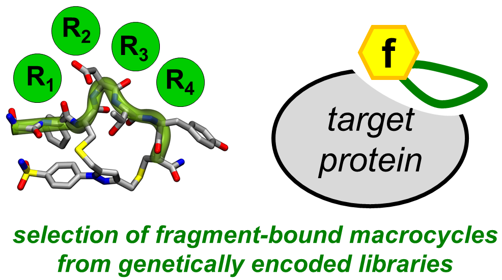

Publications
Selected papers and ongoing projects in molecular simulations, machine learning, and cheminformatics.
Publications on Google Scholar.
Published Papers:
-

Genetically-Encoded Discovery of Perfluoroaryl-Macrocycles that Bind to Albumin and Exhibit Extended Circulation in-vivo.
Wong, J.YK., Kirberger, S.E., Qiu, R., Ekanayake, A.I., , Sarkar, S., Alvizo-Paez, E.R., Miao, J., Kalhor-Monfared, S., Dwyer, J.J., Nuss, J.M., Lin, Y.S., Macauley, M.S., Vukovic, L., Pomerantz, W.CK., & Derda, R.
Nature Communication -

Papers in preparation:
- Discovery of DNA-Carbon Nanotube Sensors for Oxytocin Detection Through Machine Learning, Generative Models, and Near-Infrared Fluorescence Spectroscopy
, J. Adams, M.P. Landry, L. Vukovic. - Machine Learning Models for Predicting the Subcellular Localization of Small Molecules
, A. Yadav, Md Nurunnabi, L. Vukovic.